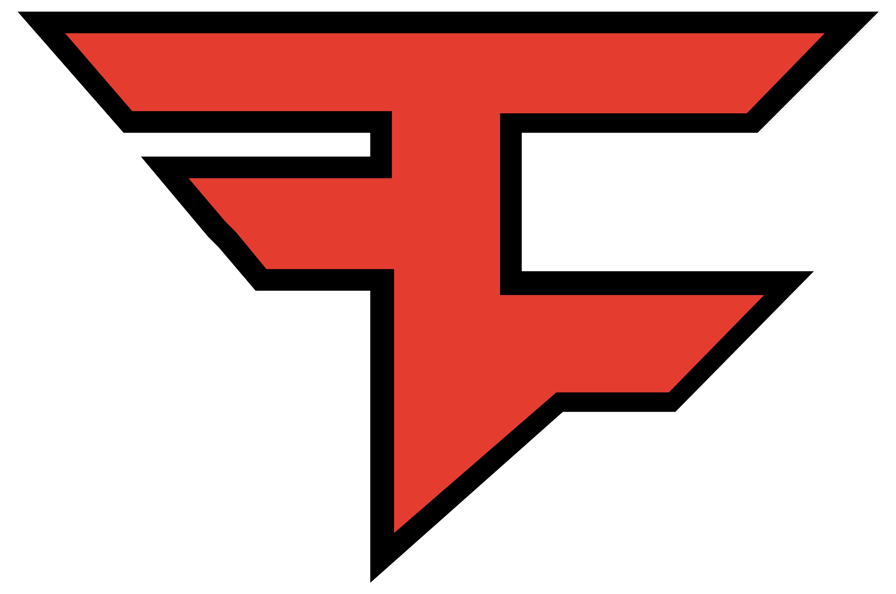

Mi az CS:GO?
A Counter-Strike: Global Offensive (röviden: CS:GO) online csapatalapú first-person shooter, amelyet a Valve Corporation és a Hidden Path Entertainment fejleszt, akik korábban a Counter-Strike: Source frissítéseiért is feleltek. Ez a negyedik része a Counter-Strike sorozatnak, leszámítva a Counter-Strike: Neo és a Counter-Strike: Online játékokat.
A Global Offensive kiadási időpontja 2012. augusztus 21. Microsoft Windows, OS X, PlayStation 3, Xbox 360 és Linux platformokon egyaránt. A hagyományos pályák mellett újabbak is megjelennek az új szereplők, fegyverek és játékmódok mellett. A játék továbbá támogatja a meccskészítést és ranglistákat is vezet. Kezdetben cross-platform többjátékos módot terveztek, ám ezt a későbbiekben elvetették. A PlayStation 3 változat DualShock 3 kontroller mellett USB-s egér és billentyűzet, illetve PlayStation Move támogatásban is részesült. 2018. december 6-án ingyenessé vált, illetve egy új, Battle Royale játékmód került bele a játékba.
Játékmenet
Játékmenetét tekintve kompetitív jellegű. A sorozat többi tagjaihoz hasonlóan a játékban két csapat méri össze az erejét, a terroristák (T-k) és a terrorelhárítók (CT-k). A Counter-Strike sorozat klasszikus bombalerakós és túszos játékmódja (5 játékos 5 ellen, 30 körös meccs/10 játékos 10 ellen, 15 körös meccs) mellett más játékmódok is játszhatóak: Fegyververseny (Arms Race), Demolition, Deathmatch, Veszélyzóna (Danger Zone, Battle Royale mód), Szárnysegéd (Wingman, 2v2) és Repülő Felderítő (Flying Scoutsman).
| Top 5 csapat: | |||||
|---|---|---|---|---|---|
| 1. | Heroic cadiaN | stavn | TeSeS | sjuush | jabbi |
||||
| 2. |  |
Outsiders FL1T | Qikert | Jame | n0rb3r7 | fame |
|||
| 3. | G2 NiKo | huNter- | jks | HooXi | m0NESY |
||||
| 4. | Liquid nitr0 | NAF | EliGE | oSee | YEKINDAR |
||||
| 5. |  | FaZe karrigan | rain | Twistzz | ropz | broky |
|||
 |